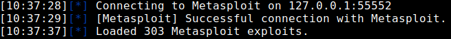

BeEF integration with Metasploit
Browser
Exploitation Framework (BeEF)Through the integration of BeEF with Metasploit, we could increase
privileges and a means to persist the browser being closed, or even the system being rebooted.
Configure
BeEF to point at our Metasploit RPC listener, and then the BeEF interface exposes Metasploit modules:
https://github.com/beefproject/beef/wiki/Configuration#metasploit1.
Enable the Metasploit module in BeEF's config (
https://github.com/beefproject/beef/blob/master/config.yaml)
Open
/usr/share/beef-xss/config.yaml (on Kali Linux) and change metasploit under the
"extension" category from false to true on about line 155/156 (in my updated version of Kali).
2. Enable the Metasploit module in
BeEF's config (
https://github.com/beefproject/beef/blob/master/extensions/metasploit/config.yaml)
There's another configuration file in
/usr/share/beef-xss/extensions/metasploit/config.yaml (on
Kali Linux).
◇ Set the "enable" value to true
◇ Optional but more secure: change the value of
“pass”
3. Enable RPC
communication, lauch this command on Metasploit
msf> load msgrpc ServerHost=127.0.0.1 User=msf Pass=abc123 SSL=y
4. Run BeEF
You
must run it as root, otherwise it will give an error about loading the modules
root@kali:/# beef-xss #on Kali Linux, otherwise ./beef
If it is already running it will not load the Metasploit modules!
5. Open the panel of beef on the attacker Browser
http://127.0.0.1:3000/ui/panel
6. Let a victim hook with our Hook URL(http://[maliciousWebServer]:3000/hook.js)
like we have done
here7.
Now we should have the Metasploit modules loaded in BeEF